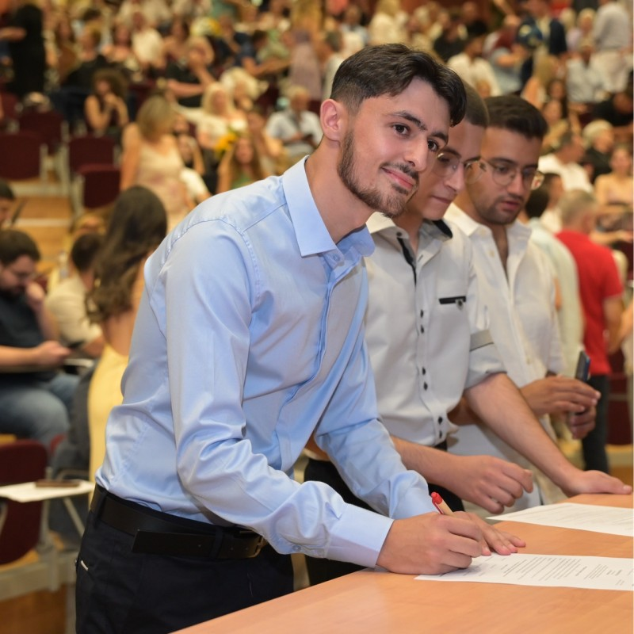

Ntenis Sampani
Computer Science Graduate | Cloud & Software Engineering
Profile
Computer Science graduate and M.Sc. student with hands-on experience in cloud computing, software development, and distributed systems. AWS Certified Cloud Practitioner interested in building scalable, cloud-native applications and modern software solutions.
Education
 University of Crete, Heraklion
University of Crete, Heraklion
M.Sc. in Computer Science (September 2025 – Present)
B.Sc. in Computer Science (September 2020 – July 2025)
Certification
- AWS Certified Cloud Practitioner (CLF-C02) — Amazon Web Services, 2025
Experience
 Software Engineering Intern — FORTH, Heraklion
Software Engineering Intern — FORTH, Heraklion
July 2024 – September 2024
- Developed a concurrent system for efficient access to shared data structures.
- Applied parallel processing and synchronization techniques using C and MPI.
Technical Skills
- Cloud & DevOps: AWS, Terraform, GitHub Actions, CI/CD, Docker, Linux, REST APIs
- Programming: Python, TypeScript, JavaScript, Java, C, C++
- Web Development: React, Next.js, Tailwind CSS
- Databases: SQL, PostgreSQL, MySQL, MongoDB, DynamoDB
- AI Development Tools: OpenAI Codex, Claude Code
Projects
- Distributed Cloud System on AWS: Built and deployed an event-driven system using EC2, SQS, Lambda, DynamoDB, IAM, and CloudWatch.
- Workout PR Tracker: Developed and deployed a full-stack fitness tracking application using TypeScript, Next.js, Prisma, PostgreSQL, and Vercel.
- Cloud Infrastructure Automation: Created reusable Terraform modules and CI/CD workflows for deploying cloud infrastructure through GitHub Actions.
- Multithreaded Airline Reservation System: Developed a thread-safe flight booking and cancellation system in C using Pthreads.